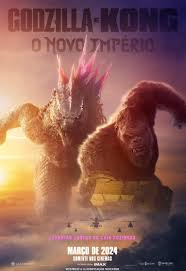

 Sinopse: Em Godzilla e Kong: O Novo Império, é um novo capítulo no chamado MonsterVerse, onde depois de terem se encontrado como inimigos em Godzila vs Kong, o poderoso Kong e o temível Godzilla se unem contra uma colossal ameaça mortal escondida no mundo dos humanos, que além de ameaçar sua própria existência também ameaça nossa espécie. Mergulhando profundamente nos mistérios da Ilha da Caveira e nas origens da Terra Oca, o filme irá explorar a antiga batalha de Titãs que ajudou a forjar esses seres extraordinários e os ligou à humanidade para sempre. Dirigido novamente por Adam Wingard, a trama também trará de volta personagens conhecidos, além de introduzir um novo protagonista, interpretado por Dan Stevens.